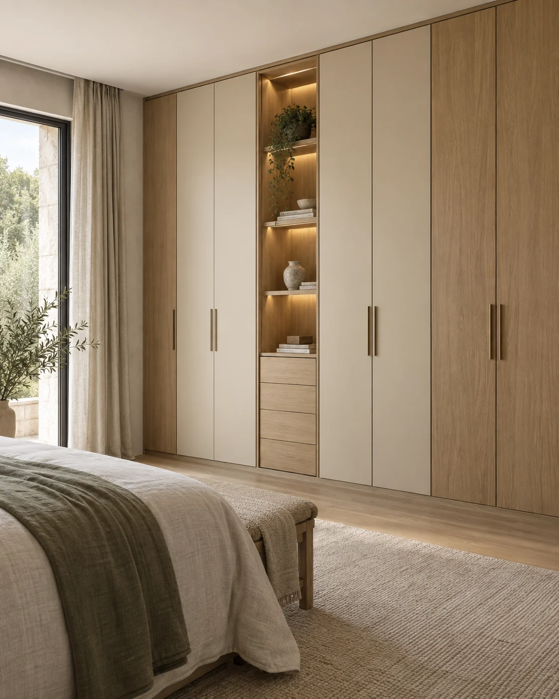
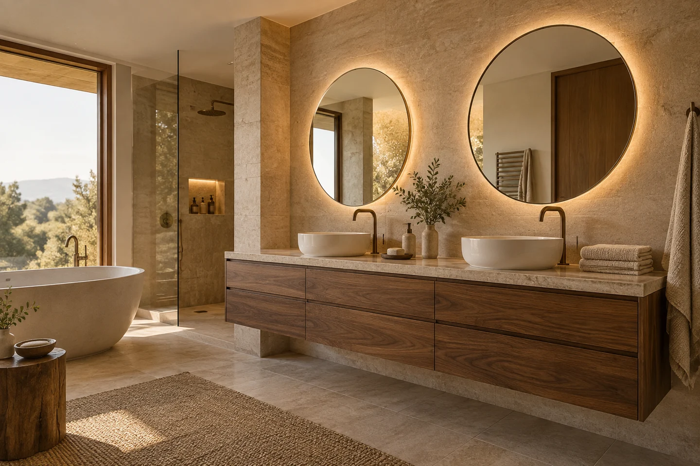
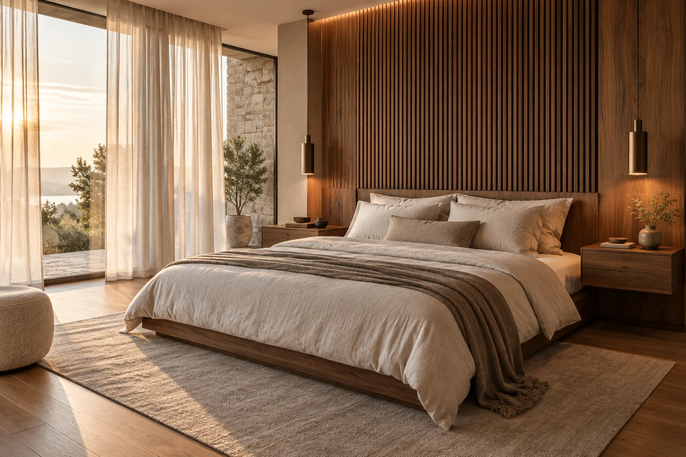
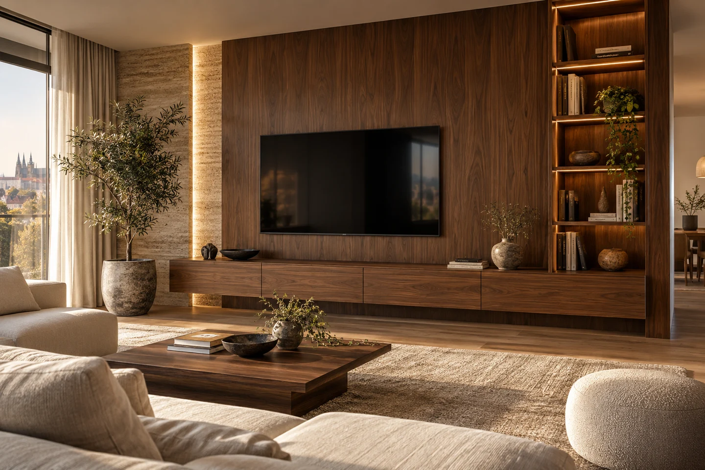

Kuchyně
KuchyněDub, kámen a světlo
Místo, kde začíná každý den.
Prohlédněte si možnosti
Přírodní dřevo, klidné linie a promyšlené detaily. Ilustrační vizualizace ukazují možné směry pro váš vlastní projekt.
Prostor pro inspiraci
KuchyněMísto, kde začíná každý den.

Vestavěné skříněÚložný prostor bez kompromisů.

KoupelnaPřírodní materiály, přirozený klid.

LožniceKlid, který si přinesete domů.

Obývací pokojDomov je tam, kde je vám dobře.
Ilustrační vizualizace možností nábytku na míru.
Pojďme vytvořit váš příběhOd inspirace k vlastnímu řešení
Uložte si, co vás zaujalo: materiál, barevnou kombinaci nebo způsob využití prostoru. Inspirace je dobrý začátek, ale konkrétní rozměry a detaily vždy vycházejí z vašeho domova.
Fotografie interiéru a přibližné rozměry nám pomohou posoudit možnosti. Společně vybereme, které nápady dávají smysl pro vaše potřeby a rozpočet.
Vybrat službu pro můj prostor